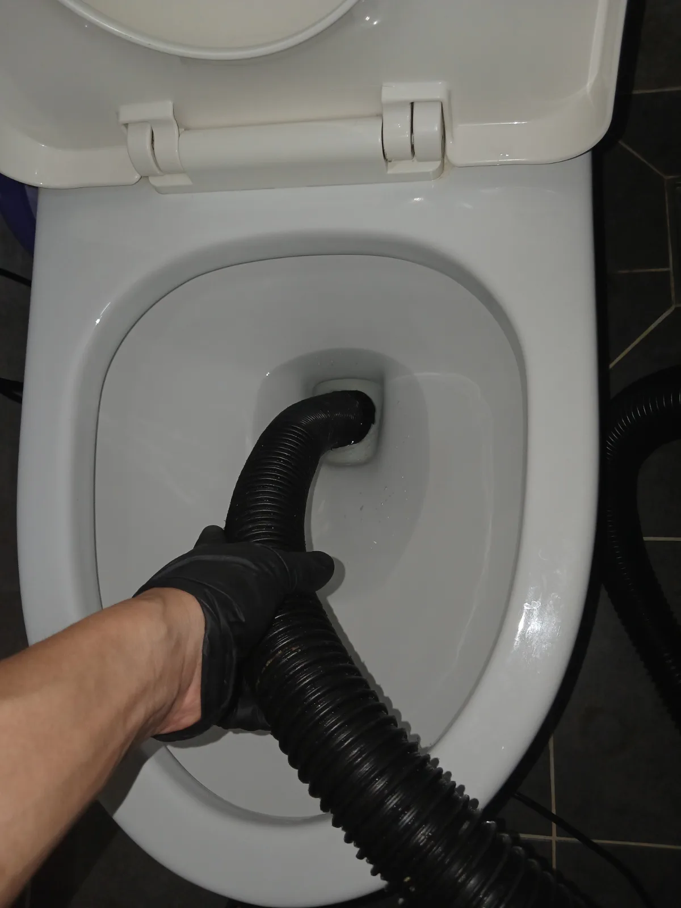

용인시 수지구 풍덕천동 변기막힘, 현장 도착 후 진단
용인시 수지구 풍덕천동 현장에 도착해 먼저 변기의 배수 상태를 확인했습니다.
변기 물이 제대로 내려가지 않는다고 해서 모든 변기막힘의 원인이 같은 것은 아닙니다. 변기 자체의 굴곡진 트랩에 이물질이 걸렸는지, 변기 아래쪽 오수배관의 흐름에 문제가 있는지에 따라 필요한 작업과 비용이 달라질 수 있습니다.
신라건축설비는 변기막힘·싱크대막힘·하수구막힘을 전문적으로 처리하며, 무조건 변기를 탈거하거나 작업 범위를 키우기보다 현장 증상을 먼저 확인하고 필요한 작업 순서와 범위를 설명한 뒤 진행합니다.
작업 범위에 따라 비용이 달라질 수 있는 경우에도 추가 작업 전에 내용을 안내해 고객이 작업 방법과 비용을 확인할 수 있도록 하는 것을 원칙으로 합니다.
1단계: 증상 확인과 필요한 장비 작업
우선 변기를 설치된 상태로 두고 전문 석션 장비의 호스를 변기 배출부에 밀착해 흡입 작업을 진행했습니다.
변기막힘 현장에서 석션은 변기 내부나 배관의 이물질을 흡입해 제거할 때 활용할 수 있는 방법입니다. 하지만 모든 막힘을 동일한 방식으로 반복 작업하는 것은 적절하지 않습니다.
이번 현장 역시 1차 작업 상태를 확인한 뒤 추가적인 점검이 필요하다고 판단해 다음 단계로 넘어갔습니다. 처음부터 불필요하게 변기를 철거하지 않고 단계적으로 작업한 것이 이번 풍덕천동 변기막힘 현장의 핵심입니다.

2단계: 원인 구간 처리와 정상 작동 확인
추가 점검을 위해 변기를 안전하게 탈거한 뒤 변기 하부 배출구와 연결된 오수배관을 직접 확인했습니다.
변기를 탈거하면 설치된 상태에서는 확인하기 어려운 하부 연결부와 배관 입구에 직접 접근할 수 있습니다. 현장에서는 탈거된 변기와 하부 오수배관 상태를 확인하면서 필요한 배관 작업을 진행했습니다.
신라건축설비는 단순 변기막힘뿐만 아니라 점검 과정에서 오수관이나 공용배관의 문제가 확인되는 경우 배관 내시경검사, 석션, 관통, 샤프트, 고압세척과 배관 보수·교체공사까지 현장 상황에 맞춰 대응할 수 있습니다.
따라서 일시적으로 물길만 확보하는 데 그치지 않고 실제 문제가 발생한 위치와 배관 구조를 고려해 적합한 작업 범위를 결정합니다.

작업 결과와 재발 방지 안내
이번 용인시 수지구 풍덕천동 변기막힘 현장은 석션 작업부터 시작해 상태를 확인하고, 필요한 단계에서 변기를 탈거해 하부 오수배관까지 점검·작업하는 순서로 진행했습니다.
변기에는 물에 잘 풀리지 않는 물티슈, 위생용품과 각종 생활 이물질을 흘려보내지 않는 것이 막힘 예방에 중요합니다. 배수가 평소보다 느려지거나 물이 차올랐다가 천천히 내려가는 증상이 반복된다면 무리하게 여러 차례 물을 내리기보다 변기와 오수배관 상태를 함께 점검하는 것이 추가 역류 피해를 줄이는 데 도움이 됩니다.
신라건축설비는 서울 전 지역과 용인·수지를 비롯한 경기권 현장에서 변기막힘, 싱크대막힘, 하수구막힘을 전문적으로 처리하고 있습니다. 작업 전 현장 상태와 필요한 작업 범위를 설명하고 비용에 영향을 주는 추가 작업이 필요한 경우 사전에 안내하며, 작업 이후 문제가 발생할 경우 A/S와 사후 대응이 가능하도록 관리하고 있습니다.
생활 속 막힘부터 오수관·공용배관 문제와 고난도 배관공사까지 현장 상태에 맞춰 진단부터 후속 작업까지 대응합니다.
최종 조치: 변기에 직접 석션 작업을 실시한 뒤 필요한 추가 점검을 위해 변기를 탈거했습니다. 이후 변기 하부 배출구와 오수배관을 확인하고 배관 작업을 진행했습니다. 처음부터 작업 범위를 크게 잡는 방식이 아니라 현장 증상과 작업 결과를 확인하면서 필요한 범위를 단계적으로 넓혀 처리했습니다.
현장 방문 전 확인하는 비용과 작업 범위
신라건축설비는 현장 증상과 배관 구조를 확인한 뒤 필요한 작업과 예상 비용을 안내합니다. 단순 관통으로 해결되는지, 배관내시경·석션·고압세척 또는 변기 탈거가 필요한지는 현장 상태에 따라 달라집니다. 출장비와 야간 작업비, 추가 장비 비용이 발생할 수 있는 경우 작업 전에 먼저 설명하고 동의를 받은 범위에서 진행합니다.
업체를 선택할 때 확인할 사항
무조건적인 ‘0원’ 표현보다 실제 작업 범위, 추가 비용 조건, 사용 장비와 사후 대응 기준을 확인하는 것이 중요합니다. 해결되지 않았을 때의 비용 기준과 작업 후 동일 증상 발생 시 점검 범위를 사전에 문의해두면 불필요한 분쟁을 줄일 수 있습니다.
용인시 수지구 변기막힘 자주 묻는 질문
변기막힘은 왜 반복되나요?
용인시 수지구 풍덕천동 현장처럼 변기의 배수가 원활하지 않아 정상적인 사용이 어려운 상태였습니다. 변기막힘은 변기 내부 트랩에 이물질이 걸린 경우도 있지만 변기 하부 오수배관 쪽에서 문제가 발생해 비슷한 증상이 나타날 수 있기 때문에 처음부터 작업 범위를 단정하지 않고 현장 상태를 확인하는 것이 중요합니다. 증상은 원인이 현장마다 다를 수 있습니다. 변기 내부 이물질뿐 아니라 하부 오수관 막힘이나 배관 상태 때문에 반복될 수 있습니다. 같은 변기막힘이 재발하면 막힌 위치와 원인을 다시 확인하는 것이 중요합니다.
변기 물이 안 내려가거나 역류하면 변기뚫는업체를 불러야 하나요?
물이 천천히 내려가거나 수위가 차오르고 변기역류가 반복되면 단순 뚫어뻥보다 전문 장비 점검이 필요한 경우가 있습니다. 현장에서는 증상과 배관 구조를 먼저 확인합니다.
변기 이물질 막힘은 변기를 탈거해야 하나요?
물티슈·청소포·플라스틱·음식물처럼 변기 트랩에 걸린 이물질은 위치에 따라 변기 탈거가 필요할 수 있습니다. 무조건 탈거하지 않고 먼저 막힘 위치를 판단합니다.
변기뚫는업체는 어떤 장비로 작업하나요?
현장 상태에 따라 석션, 에어건, 배관내시경, 변기 탈거 등을 사용합니다. 하부 오수관 문제라면 변기만 뚫는 작업보다 배관 구간 확인이 중요합니다.
변기막힘 비용은 어떻게 정해지나요?
단순 관통인지, 이물질 제거와 변기 탈거가 필요한지, 오수관이나 공용배관 작업이 필요한지에 따라 달라집니다. 추가 장비나 작업이 필요하면 진행 전에 범위와 비용을 안내합니다.
변기에서 냄새가 나거나 물이 자주 차오르는 것도 막힘과 관련 있나요?
악취나 수위 이상이 항상 막힘 때문인 것은 아니지만 배수 불량, 오수관 상태, 연결부 문제와 함께 나타날 수 있습니다. 반복되면 현장 점검으로 원인을 구분해야 합니다.
변기막힘 서울·경기 출동지역
신라건축설비는 용인시 수지구 풍덕천동 현장을 포함해 서울 25개 구와 경기도 31개 시·군의 배관 문제를 상담합니다. 현장 거리와 기사 배정 상황에 따라 출동 가능 여부를 먼저 안내드립니다.
서울 전 지역
강남구 · 강동구 · 강북구 · 강서구 · 관악구 · 광진구 · 구로구 · 금천구 · 노원구 · 도봉구 · 동대문구 · 동작구 · 마포구 · 서대문구 · 서초구 · 성동구 · 성북구 · 송파구 · 양천구 · 영등포구 · 용산구 · 은평구 · 종로구 · 중구 · 중랑구
경기도 주요 출동지역
수원시 · 용인시 · 고양시 · 화성시 · 성남시 · 부천시 · 남양주시 · 안산시 · 평택시 · 안양시 · 시흥시 · 파주시 · 김포시 · 의정부시 · 광주시 · 하남시 · 광명시 · 군포시 · 양주시 · 오산시 · 이천시 · 안성시 · 구리시 · 의왕시 · 포천시 · 양평군 · 여주시 · 동두천시 · 과천시 · 가평군 · 연천군